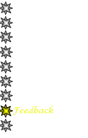
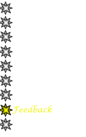

|
Your Feedback Is Important |
|
Najm is an ongoing effort that depends on your input. I really appreciate your feedback, comments, feature requests, or anything else you want to communicate to me.
Please feel free to email me @ menein@u.washington.edu . You can also use Najm to send feedback. Just go to Help menu, select report a bug menu item, and write repro steps, comments, or any other thoughts you have.
Thank You!
Mohamed Enein